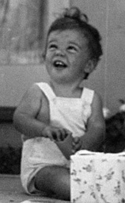
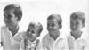
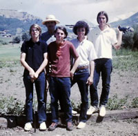
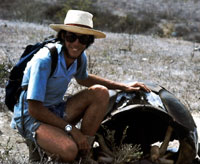
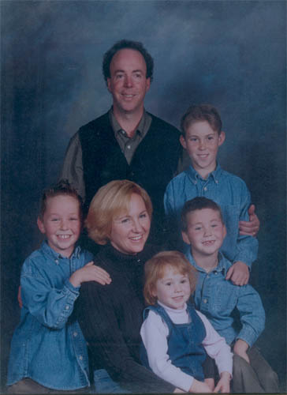

|
Gregory Ford HendersonGreg Henderson was born on July 29, 1953, in Carmel, California. He is married and has four children. Greg had a long career in the technology industry, working for companies such as Apple Computer. Since 2019, he has focused on preserving and interpreting the early history of Carmel-by-the-Sea and Monterey County through his writing and research. |
|
| Important Facts | ||
| July 29, 1953 | Gregory "Greg" Ford Henderson was born at Peninsula Community Hospital in Carmel, California, on July 29, 1953, at 8:22 p.m. He was the second of five children born to Alexander D. Henderson III and Patricia Ford. |
 |
| July 30, 1953 | His birth was announced in the Monterey Peninsula Herald and reported that he was the second son born to Alexander D. Henderson III and Patricia Ford. The announcement also mentioned that he had an older brother, Alexander D. Henderson IV. His maternal grandparents were Marion Boisot and writer George Faunce Whitcomb. Source: Peninsula Community Hospital records. | |
| July 5, 1957 | The family later relocated from California to Florida, initially living in Greg’s paternal grandfather’s Alexander D. Henderson Jr. Avon-by-the-Sea apartments in Pompano Beach, located next to the ocean. The complex featured a central swimming pool and a private beach. The family lived in the apartments for about a year before moving to a new house in Pompano Beach in 1958. | |
| 1958 | The family moved into a new house at 3532 N.E. 31st Avenue, Pompano Beach, Florida. The house was a single-story concrete block home on the Intracoastal Waterway with its own boat dock, located across the water from his grandfather’s home. The family had a boat and spent time boating and fishing on the Intracoastal Waterway and the Atlantic Ocean. |
 |
| 1958 | Greg attended his grandfather’s school, Hillsboro Country Day School in Hillsboro Beach, Florida, from kindergarten through sixth grade. At the school, he participated in various activities, including being on the swim team and performing in school plays. He also attended Sunday school at the First Presbyterian Church of Pompano Beach. | |
| 1963 | The family moved to a home in Sea Ranch Lakes, a gated community in Fort Lauderdale, Florida, with its own police force and private beach club. The community included a bridge spanning two large lakes. The family spent summer vacations in Pine Orchard, Connecticut, and Jamaica. |

|
| 1964–1966 | Greg attended Camp Arrowhead in Tuxedo, North Carolina, and later Camp Highlander in Highlands, North Carolina. During this period, he also attended Pine Crest School in Fort Lauderdale, Florida, for seventh grade. |

|
| 1967–1968 | Greg attended Meadowbrook Manor Riding Farm in East Stroudsburg, Pennsylvania. He rode horses daily and participated in horse shows. He learned to jump horses and to drive a horse-drawn carriage. He also attended JO-AN Farms in Milan, Missouri, where he continued horseback riding and participated in horse shows. | |
| 1969–1972 | After his parents divorced, Greg, his mother, and his siblings moved back to California, where he began high school at Robert Louis Stevenson School in Pebble Beach. | |
| 1972–1974 | Greg graduated from Robert Louis Stevenson School and entered Menlo College in Menlo Park, California. He graduated from Menlo College with an Associate of Arts degree. | |
| 1973 | The family spent summers in Aspen, Colorado, visiting their father and Donna. They camped at Maroon Bells and Flying Pan Lake, and one summer attempted to cross the Continental Divide with llamas but turned back because of rain. |
 |
| 1974–1975 | Greg attended the University of the Pacific (UOP) in Stockton, California. During that time, he took a month-long university-sponsored trip to Taipei, Taiwan, to study Taiwanese culture. |

|
| 1975–1980 | Greg became involved with the Church of Scientology, purchased the New York West deli in Stockton, California, and later became a part owner of a bakery, health food store, and café. | |
| February 3, 1976 | Greg traveled with Alex, Donna, Dawson, and Cindy to South America, visiting Ecuador, Peru, and Bolivia. In Peru, they visited Machu Picchu. During the trip, they spent about a week sailing with a guide on a small boat around the Galápagos Islands. |
 Galápagos Islands |
| December 30, 1978 | Greg’s first marriage was to Susan Patricia Grant. They were married in a civil ceremony in Bromley, England. Greg and Sue later traveled to Dover and took a ferry to Paris, France, where they visited the Palace of Versailles, the Louvre, and the Eiffel Tower. | |
| 1980–1984 | Greg sold the New York West restaurant in Stockton and moved to Sausalito, California. He returned to school at San Francisco State University, where he majored in Business Information Systems and earned a Bachelor of Science degree. | |
| 1984–1986 | Greg’s first job after college was as a programmer at Lockheed Missiles & Space in Sunnyvale, California, now part of Lockheed Martin. | |
| 1987–1993 | Greg worked as a Quality Assurance Engineer at Apple in Cupertino, California. At Apple, he worked on the Macintosh II and Macintosh SE computers, as well as the System 7 operating system. He also worked on the first color monitor, early laptops, and voice recognition technology. Greg’s work at Apple involved testing hardware and software to ensure quality and reliability. |
|
| December 30, 1989 | Greg married Louise Zellie Zelle Gloor at her parents’ home in Mariposa, California. | |
| May 27, 1990 | Ryan Alexander Henderson was born at Kaiser Permanente in Santa Clara, California. |
 |
| 1991 | Greg and Louise purchased a three-bedroom, two-bath home in Campbell, California, which they later expanded to four bedrooms and three bathrooms. Over time, they converted one bedroom into an office, remodeled the middle bathroom, and updated the primary bedroom. The family has lived in the same home since 1991. | |
| February 18, 1992 | Christopher Ford Henderson was born at Kaiser Permanente in Santa Clara, California. | |
| 1993–2003 | Greg left Apple to become a QA Manager at Computer Curriculum Corporation (CCC), a leader in educational software that is now part of Pearson Education. |
|
| March 12, 1994 | Sean Murray Henderson was born at Kaiser Permanente in Santa Clara, California. | |
| September 19, 1996 | Leah Louise Henderson was born at Kaiser Permanente in Santa Clara, California. | |
| 2003–2006 | Greg left CCC to work as a Test Lead Engineer at Kaplan in Oakland, California. Kaplan is a leader in K–12 educational software. |
|
| 2006–2007 | Greg worked as a Senior Test Engineer at AlphaSmart in Los Gatos, California. AlphaSmart later became Renaissance Learning, a leading provider of computerized assessment and progress-monitoring tools for pre-K–12 schools and districts. |
|
| 2007–2011 | Greg became a QA Manager at the startup YouSendIt, Inc., later known as Hightail, a cloud-based service that enabled users to send, receive, and track digital files on demand. |
|
| 2012–2019 | Greg worked at the startup Quisk, Inc. as a Senior QA Manager in Sunnyvale, California. Quisk was a mobile payments technology company that provided mobile marketing and payment solutions for banks, financial institutions, and merchants. Following the company’s closure in October 2018, he transitioned into a year-long consultancy role to support operations in Jamaica. |
|
| 2019–Present | Since 2019, Greg has focused on preserving and interpreting the early history of Carmel-by-the-Sea and Monterey County. He has published multiple books and written numerous Wikipedia articles documenting the region’s founding families, artists, and photographers. His work includes a comprehensive study of Attorney General and California State Senator Tirey Lafayette Ford, as well as the history of Carmel City, the Catholic summer resort that later became Carmel-by-the-Sea. His publications are available on Amazon. |

|
March 1, 2026 | Greg delivered a presentation titled Lewis Josselyn: Pioneer Photographer of Carmel and Monterey County, 1900–1950. The talk explored Josselyn's life and work, highlighting how his photographs document the artistic, civic, and architectural evolution of Carmel-by-the-Sea and the broader Monterey County region in the early twentieth century. The presentation is available on YouTube. |

Last updated: April 29, 2026